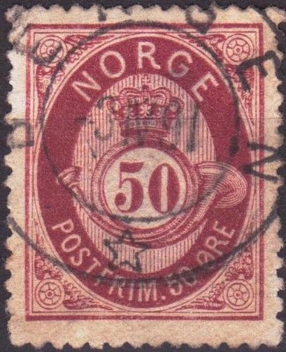
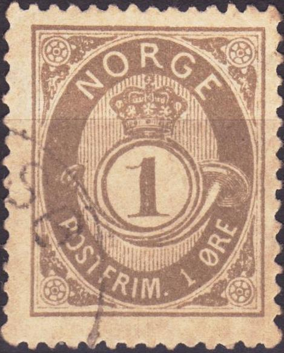
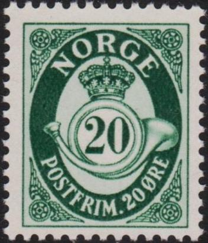
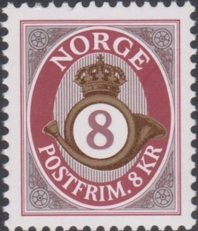
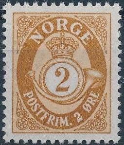

Norvège - Norwegen
Return To Catalogue - Norway 1855-1877
Note: on my website many of the
pictures can not be seen! They are of course present in the
catalogue;
contact me if you want to purchase it.
Value in 'SKILLING'
1 Skilling green 2 Skilling blue 3 Skilling red 4 Skilling lilac 6 Skilling brown 7 Skilling brown Surcharged
'15 Ore' on 4 Skilling lilac (1908) '30 Ore' on 7 Skilling brown (1906)
1877 Posthorn, value in 'ORE', thin letters in 'NORGE' (letters with no serifs)


1 Ore grey 2 Ore brown 3 Ore orange 5 Ore blue 5 Ore green 10 Ore red 12 Ore green 12 Ore brown 20 Ore brown 20 Ore blue 25 Ore lilac 35 Ore green 50 Ore red 60 Ore blue Surcharged
'2 Ore' on 12 o brown (1888)
Specialists further distinguish in this thin letter print, stamps printed by P. Petersen, Chr. Johnsen or the State printer (Centraltrykeriet). They differ in size and in small details (such as the shading on the posthorn).
1894 Posthorn value in 'ORE', thick letters in 'NORGE' (antiqua script, letters with serifs)


1 Ore grey 2 Ore brown 3 Ore orange 5 Ore green 5 Ore lilac (1922) 7 Ore green (1929) 10 Ore red 10 Ore green (1922) 12 Ore violet (1918) 15 Ore brown 15 Ore blue (1920) 20 Ore blue 20 Ore green (1921) 25 Ore lilac 25 Ore red (1922) 30 Ore grey 30 Ore blue (1927) 35 Ore green 35 Ore olive (1919) 40 Ore green (1917) 40 Ore blue (1922) 50 Ore brown 60 Ore blue Surcharged
'5 ore' on 25 ore lilac (1922)
Postcards in the same desing exist, I have seen: 2 sk blue, 3 sk red, 3 o orange, 5 o blue, 6 o green, 6 o brown and 10 o red.
The various types of these stamps can be identified at: http://www.frimerkehuset.no/fh/posthorn/posthorn.htm


1907 and 1910 30 ore stamps, differing in the bottom
"30"; flat on top or rounded at the top. Also note that
the wings in the corners have been redone. In the 1910 issue,
they are much better visible.
In 1937 a design with a plain background was introduced (it was also printed on watermarked paper): 1 o olive, 2 o light-brown, 3 o orange, 5 o lilac, 7 o green and 12 o violet.


1937 design
In 1941 some values were overprinted with a black "V": 1 o olive, 2 o light-brown, 3 o orange, 5 o lilac, 7 o green, 12 o violet.

1941 "V" overprint
In 1950 some new values were issued: 10 o grey, 15 o green and 20 o brown.

1950 issue
In 1952 a surcharged stamp was issued: '20' on 15 o green. A 15 o brown and 20 o green followed.


1952 issue
1962, changed design:

1962 issue (enlarged view), with vertical background lines behind
the crown and horn and horizontal background lines behind
"NORGE" and the bottom text. In this design were
issued: 5 o lilac, 10 o grey, 15 o brown, 20 o green, 25 o blue
and 50 o violet.
This set was supplemented in 1978 with the values 40 o olive, 50 o violet, 60 o red, 70 o orange, 80 o red-brown and 90 o brown.


1978 issue
In 1991, posthorn stamps in multiple colors were issued.

Multicolored values in 1 Kr, 2 Kr, 3 Kr, 4 Kr and 5 Kr, very
similar to the ones above were issued in 1992.

The values 0,10, 0,20, 0,30, 0,40 and 0,50 were issued in 1997.

Stamps with silver background were issued in 2001: 1 kr, 2 Kr, 3
Kr, 5 Kr, 6 Kr, 8 Kr.

30 KR stamp in posthorn design issued in 2010. A similar 50 Kr
was issued in 2011 and a 40 Kr in 2012. A 10 Kr and 20 Kr
followed in 2013, a 70 Kr in 2014, a 60 Kr in 2015.

2 Ore brown: 1877, 1894 and 1937 issue


3 Ore orange: 1877, 1894, 1910 (bottom "3" different)
and 1937 (no background lines, without and with "V"
overprint; 1941) issues


A rouletted reprint of the 1894 issue, made in 1965 for the
"Det Norske Postverks" handbook. 4000 reprints were
made. Another reprint was made of the 40 o value in 1969.
Stamps - Timbres-Poste - Briefmarken - Frimerker
{kind=link}
{kind=link}